本书作者：测试开发刚哥，文章版权归个人所有，未经授权请勿转载。
JMeter是性能测试工具，在使用JMeter变多以后，越来越觉得之所以它能成为当今时代最主流测试工具，是因为它太成熟了，举个小例子，编写GET请求的时候，需要把查询参数，也就是?号后面的请求参数添加进去，JMeter竟然有个Add from Clipboard功能，在浏览器复制以后，点这个按钮就填充好了:
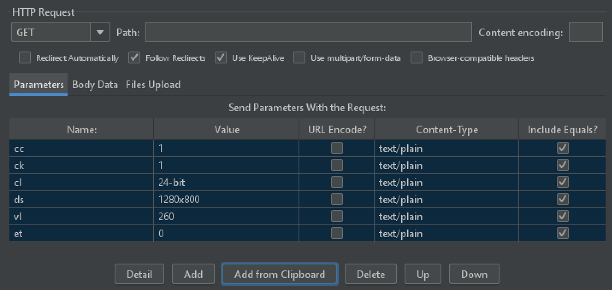
有优点也有缺点，它的UI界面确实丑了点，英文版稍微弥补了一下，相较于中文，只由24个字母组成的英文感官上更简洁一点点。JMeter系列文章都将基于英文版进行截图，重要信息会翻译为中文进行解释。
JMeter最核心的元素是组件，它们构成了JMeter结构图：
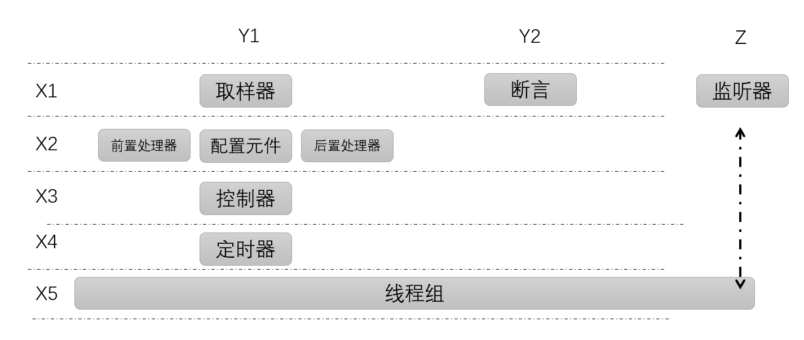
这是一个三维空间，先看Z轴，只有监听器，用于对测试结果数据进行收集和统计。X轴分为5个阶段，从上往下是运行流程。Y轴中的Y1元件很多，用来模拟用户请求，Y2是断言，对请求响应结果进行验证。接下来一个一个元件来看。
Threads
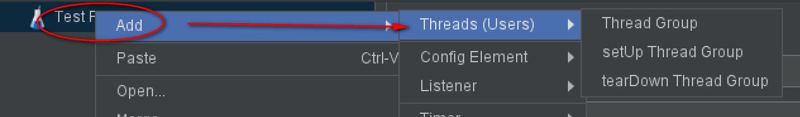
第一步就得添加这个，没有线程组，JMeter也没法使用。一个线程模拟一个用户，线程组用来模拟多个用户。
Sampler
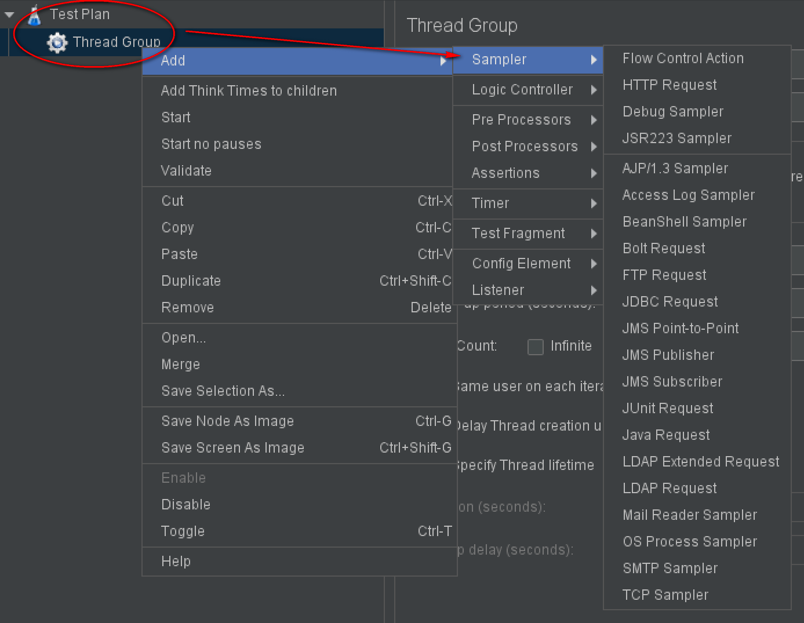
Sampler是一个无界面浏览器，用于发送请求，接收响应。支持现有各种协议，比如HTTP、WebSocket、MQTT等。默认没有的话，添加个第三方jar包就可以了，还支持自定义jar包，扩展性极强。
Assertions
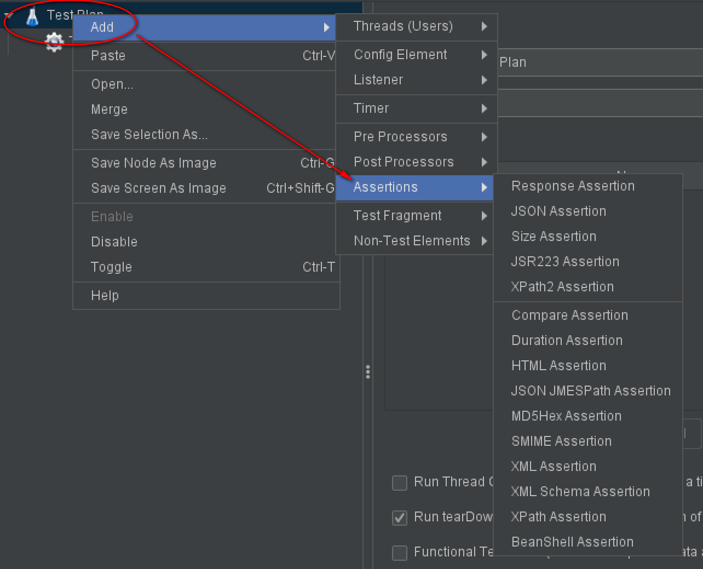
响应对不对，用断言来验证，从图中可以看到，断言类型有很多种。
Listener
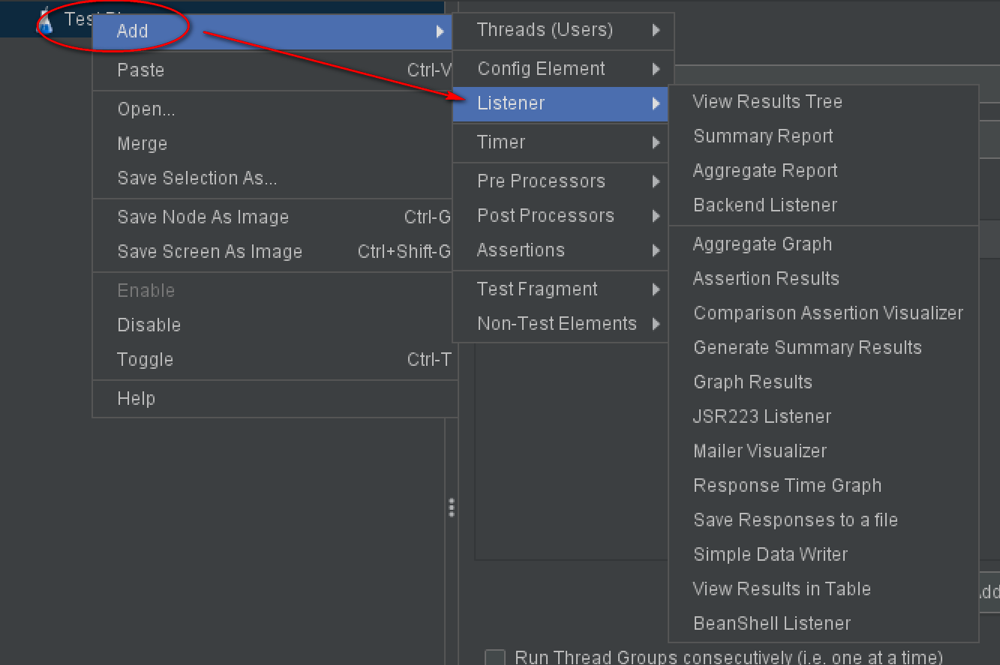
用的最多的是第一个：View Results True，实时查看请求响应数据。压测时还会添加Aggregate Report，实时查看线程组统计数据，包括平均响应时间、吞吐量、TPS等性能测试指标。此外，还有其他类型的图表报告，可以导出成本地文件进行分析。
Pre Processors
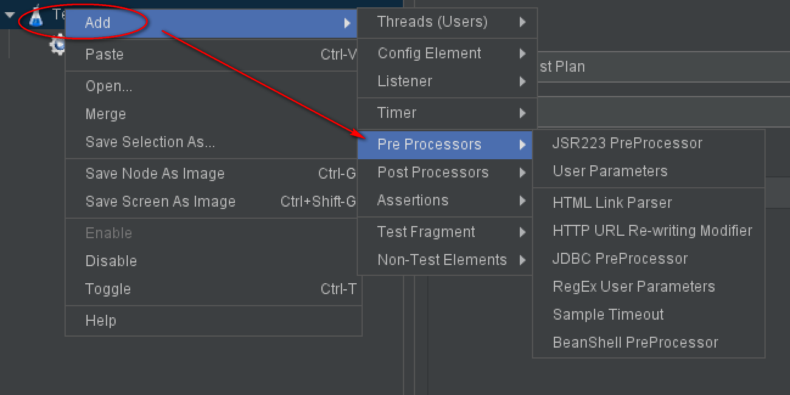
请求前的预处理，比如连接数据库等。
Config Element
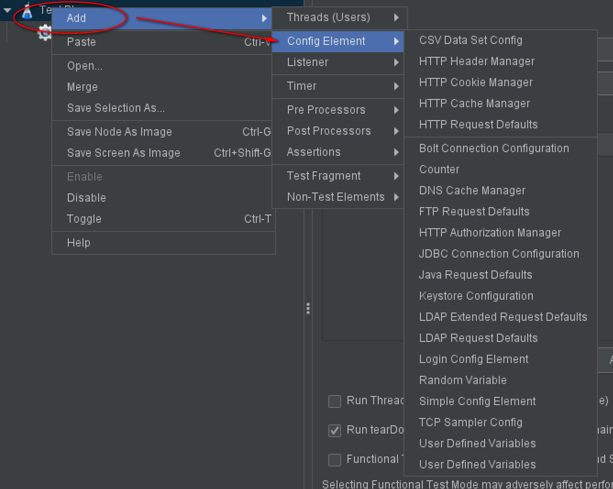
JMeter四种参数化方式这里面就有两个：CSV Data Set Config和User Defined Variables，顾名思义它们就是为请求提供配置数据的，还有HTTP Header Manager给请求添加Header，HTTP Cookie Manager自动记录服务器返回的Cookie。
Post Processors
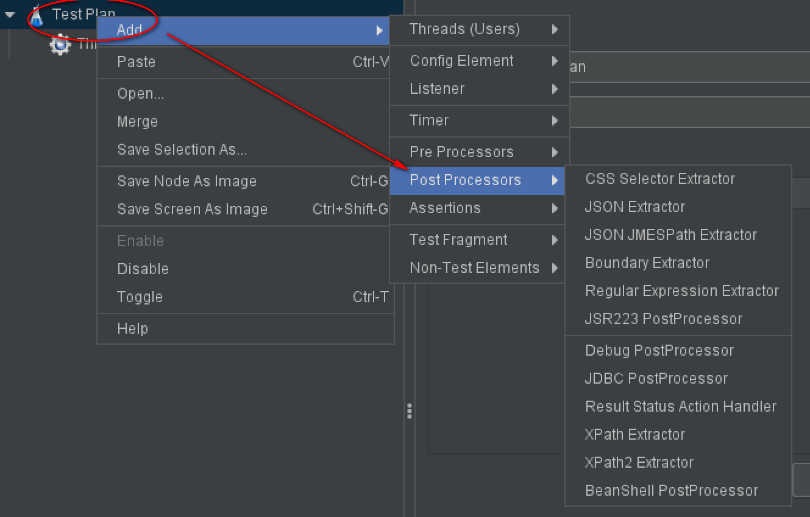
对响应进行数据提取使用后置处理器，常见的是使用Regular Expression Extractor正则表达式提取，我现在用的比较多的是JSON JMESPath Extractor，语法更直观，匹配更精确。
Logic Controller
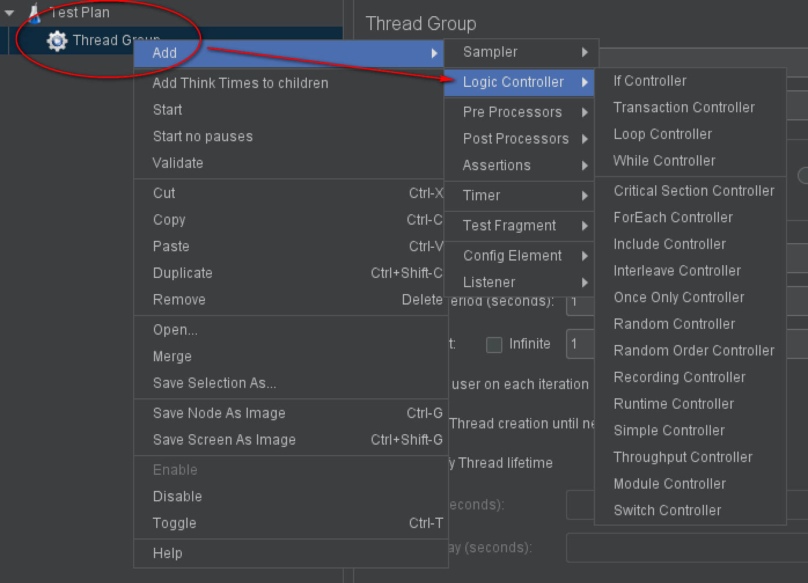
JMeter也具备逻辑控制能力，预置了多种控制器，比如Once Only Controller，可以用来只读取一次csv文件，或者只登陆一次。
Timer
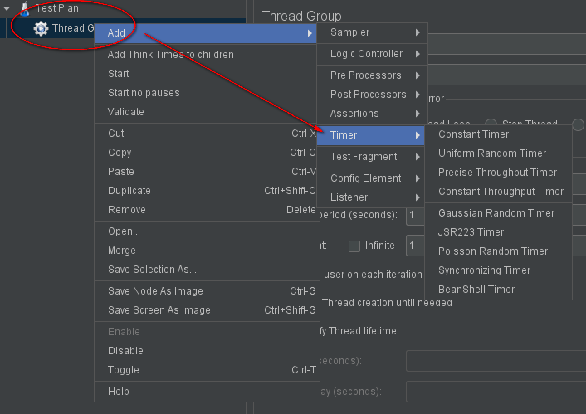
它提供了各种功能的定时器，比如Constant Timer就像脚本里面的sleep，等待一段时间。比如Synchronizing Timer设置集合点，让多个线程同一时刻发起请求。
Test Fragment
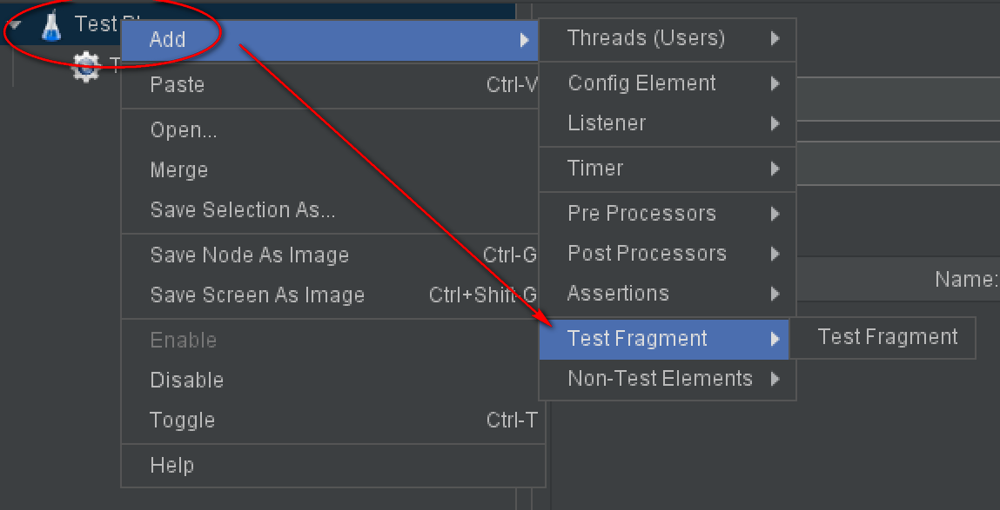
可以通过 测试计划|Test Fragment 添加。线程组也可以添加。
可用于临时备份元件，Test Fragment下的元件不会被运行。封装后可被模块控制器调用，就像编程一样。
小结
本文是JMeter系列开篇，介绍了全部组件的概览情况，从结构图可以知道，取样器、断言、监听器组合在一起可以完成发送请求、验证结果和记录结果。前置处理器、配置元件、后置处理器为取样器提供了数据支持。逻辑控制器具备流程控制能力，实现业务需求。定时器设置等待时间和集合点等。Test Fragment用来备份元件，底下的元件不会被运行。这些组件的底层是由线程组驱动的。
参考资料：
《全栈性能测试修炼宝典JMeter实战》